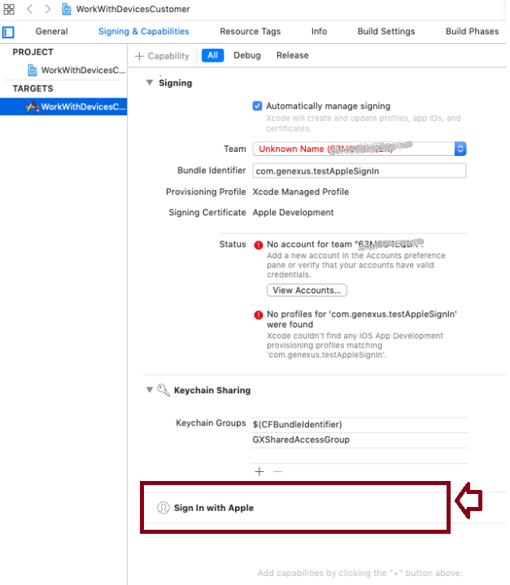

Allows the app to use the device's Apple ID as an identity provider. Values
Description
For an iOS app to sign in with Apple, the "Sign In with Apple" entitlement must be enabled in the Xcode project. The Enable Sign in with Apple property in a Smart devices main object enables this entitlement. Apple requires to have Sign In with Apple if the app has another external sign in provider (like Facebook or Twitter), according to this App Store Review Guideline. It is available for iOS 13, tvOS 13, watchOS 6 and macOS Catalina. You can check the effect of enabling this property by editing the XCode project:  See the Apple documentation about this topic here. To Sign in with Apple, see GAM Apple Authentication type. AvailabilityThis property is available since GeneXus 16 upgrade 6. Scope Objects: Menu for Smart Devices, Panel for Smart Devices, Work With for Smart Devices See Also
|
| Backlinks |
| GAM Apple Authentication type |